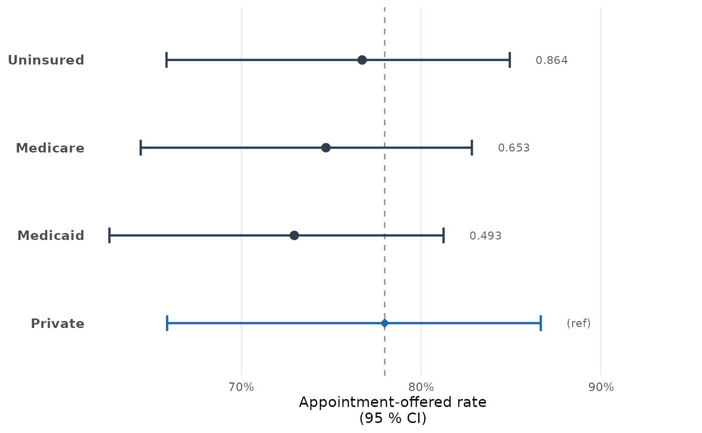
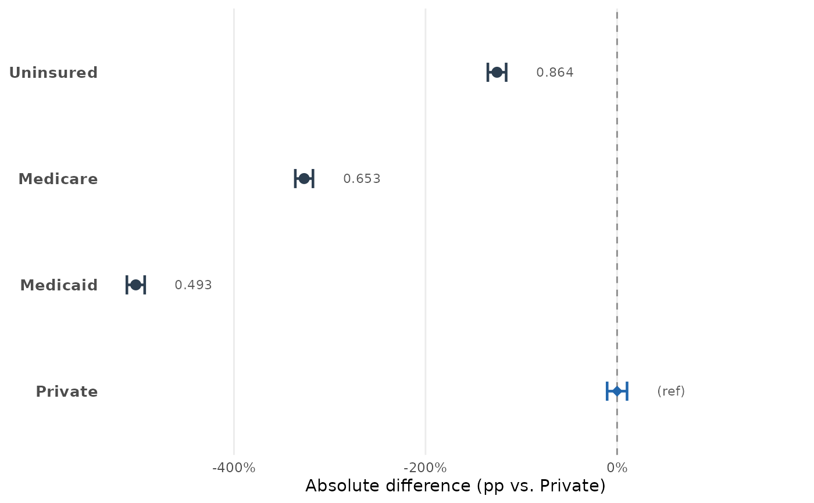
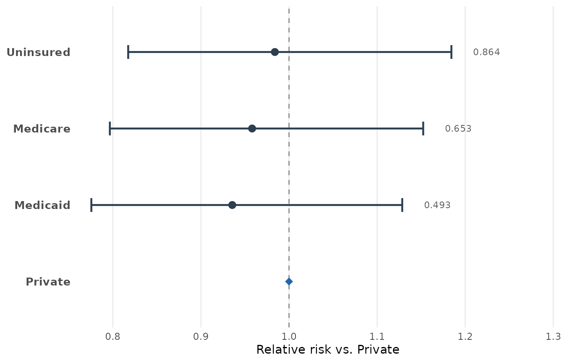

Plot disparity metrics from a mysterycall_disparities_table
Source: R/plot_disparities.R
mysterycall_plot_disparities.RdProduces a publication-ready dot plot of acceptance rates, absolute
differences, or relative risks computed by mysterycall_disparities_table().
The function is the binary-outcome analogue of mysterycall_irr_plot():
call mysterycall_disparities_table() first, then pipe the result here.
Usage
mysterycall_plot_disparities(
x,
metric = c("rate", "abs_diff", "rel_risk"),
show_ref = TRUE,
show_p = TRUE,
color_sig = "#C0392B",
color_ns = "#2C3E50",
color_ref = "#2166AC",
point_size = 3,
x_label = NULL,
x_pct = NULL,
title = NULL
)Arguments
- x
A
mysterycall_disparities_tableobject returned bymysterycall_disparities_table(), or a plain data frame with at least the columns required by the chosenmetric(see Details).- metric
Character scalar. Which disparity metric to display on the x-axis:
"rate"(default)Appointment-offered rate for each group with its CI. A vertical dashed reference line marks the reference group rate.
"abs_diff"Absolute difference in percentage points versus the reference group. Reference line at 0.
"rel_risk"Relative risk versus the reference group. Reference line at 1.
- show_ref
Logical. When
TRUE(default) the reference group row is included in the plot, drawn withcolor_refand a diamond shape.- show_p
Logical. When
TRUE(default) the formatted p-value is annotated to the right of each non-reference point.- color_sig
Character. Colour for groups whose
p_value < 0.05. Default"#C0392B"(red).- color_ns
Character. Colour for non-significant groups (or when
p_valueis absent). Default"#2C3E50"(dark navy).- color_ref
Character. Colour for the reference group point. Default
"#2166AC"(blue).- point_size
Numeric. Diameter of the estimate point. Default
3.- x_label
Character or
NULL. X-axis label.NULL(default) picks a label automatically frommetric.- x_pct
Logical. When
TRUE(default for"rate"and"abs_diff") the x-axis is formatted as a percentage. Ignored whenmetric = "rel_risk".- title
Character or
NULL. Plot title. DefaultNULL(no title).
Value
A ggplot2::ggplot object. Print it to display or pass to
ggplot2::ggsave() to save.
Details
Required columns by metric:
"rate"group,rate,lower_ci,upper_ci"abs_diff"group,abs_diff,lower_ci,upper_ci(CIs are re-centred automatically)"rel_risk"group,rel_risk,rr_lower,rr_upper
When x is a mysterycall_disparities_table object the reference group
and significance attributes are read directly from the object's attributes.
When x is a plain data frame, a p_value column is used for significance
colouring if present, and the first row is treated as the reference group
when show_ref = TRUE.
Examples
set.seed(42)
df <- data.frame(
insurance = sample(c("Medicaid", "Medicare", "Private", "Uninsured"),
300, replace = TRUE),
accepted = rbinom(300, 1, prob = rep(c(0.64, 0.84, 0.91, 0.54), 75))
)
tbl <- mysterycall_disparities_table(df, "accepted", "insurance",
ref_group = "Private")
mysterycall_plot_disparities(tbl)
#> `height` was translated to `width`.

mysterycall_plot_disparities(tbl, metric = "abs_diff")
#> `height` was translated to `width`.

mysterycall_plot_disparities(tbl, metric = "rel_risk")
#> `height` was translated to `width`.
#> Warning: Removed 1 row containing missing values or values outside the scale range
#> (`geom_text()`).
